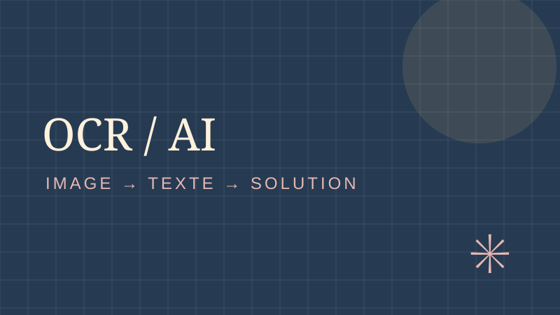
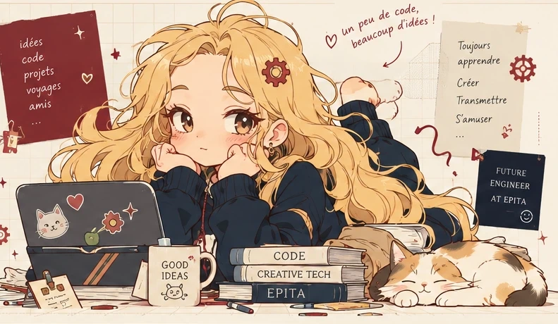
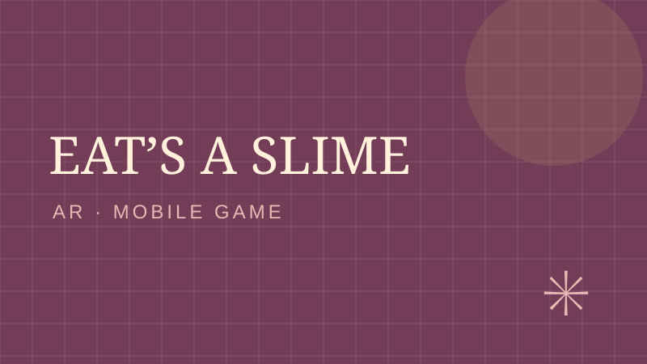
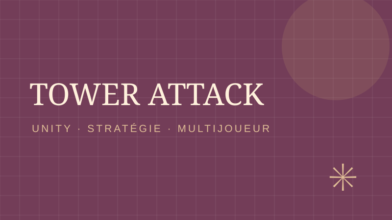
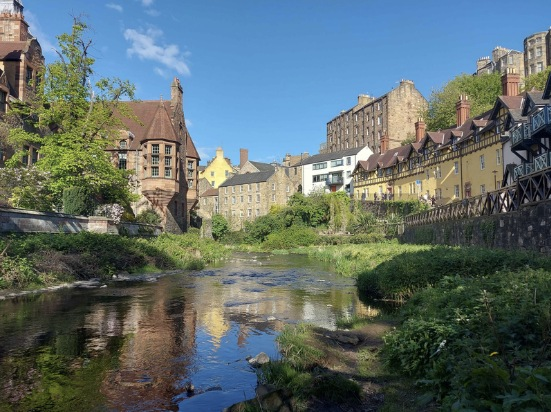

PROJET INFORMATIQUE
NeurOctopus · OCR
2025–2026 · Des pixels aux lettres : prétraitement d’images, graphes, segmentation et travail en équipe.
Lire l’étude de cas ↗Je conçois, développe et explore des projets qui donnent vie aux idées, à la croisée de la technologie, de la créativité et de l'humain.

Une sélection de projets académiques, personnels et associatifs. Clique sur une carte pour en découvrir davantage.

2025–2026 · Des pixels aux lettres : prétraitement d’images, graphes, segmentation et travail en équipe.
Lire l’étude de cas ↗
2025 · Jeu mobile en réalité augmentée à 360°, réalisé en binôme. J’ai pris en charge la majeure partie du développement technique.
Lire l’étude de cas ↗
2024–2025 · Jeu de stratégie multijoueur inspiré du Tower Defense inversé, avec gestion d’unités et synchronisation réseau.
Lire l’étude de cas ↗Avant les projets d’ingénierie, il y a eu des premières découvertes, des rencontres et beaucoup d’envie d’essayer.
Au collège, je découvre la logique de programmation avec Scratch. Je commence à comprendre comment transformer une idée en instructions, même si je ne suis pas encore complètement conquise.
Je participe au stage Girls Can Code! à EPITA Rennes. J’y retrouve une atmosphère chaleureuse, des rencontres et beaucoup de moments partagés — y compris des parties de loup-garou mémorables !
Ma sœur, qui a étudié à EPITA, a quatre ans de plus que moi : ce sont des amis à elle qui m’ont fait découvrir le stage. Au programme : Python, micro:bit et de petits projets comme Flappy Bird, Snake ou une calculatrice animée. Cette fois, la programmation devient une expérience collective, créative et vraiment amusante.
J’intègre la prépa d’ingénieur en informatique. Je découvre de nouveaux langages, des projets plus ambitieux et le plaisir de combiner rigueur technique et création.
Ma première année à EPITA est marquée par deux projets de jeux vidéo. Je commence avec Tower Attack, un jeu de stratégie développé en équipe sous Unity, où je travaille notamment sur les menus, les environnements et le storytelling. Puis, au cours de cette même année, je participe à Eat’s a Slime, un jeu mobile en réalité augmentée réalisé en binôme.
Découvrir Tower Attack ↗ Découvrir Eat’s a Slime ↗L’année suivante, je découvre un autre domaine avec NeurOctopus, un projet collectif de reconnaissance et de résolution de mots mêlés à partir d’images. Je me concentre sur le prétraitement, la détection des caractères et la reconstruction de la grille, en réutilisant des notions d’algorithmique comme les parcours de graphes et l’analyse du voisinage des pixels.
Découvrir NeurOctopus ↗Mon parcours me conduit également à Heriot-Watt University : une nouvelle occasion de découvrir un autre environnement universitaire et de développer mon ouverture internationale.
De Scratch à mes projets actuels, ce que j’aime le plus n’a pas changé : imaginer, essayer, comprendre… et recommencer. ✳
Je suis Norah Beillevert, étudiante en informatique à EPITA depuis 2024, en cycle préparatoire intégré. J’aime concevoir des jeux, explorer le traitement d’images et apprendre au contact des autres.
Mon parcours comprend également une expérience à Heriot-Watt University, en Écosse, en 2026, ainsi que des engagements citoyens et environnementaux.
Des emplois saisonniers dans des environnements très différents, qui m'ont appris à m'adapter, à tenir le rythme et à contribuer à une équipe.
Employée commerciale saisonnière
Une expérience dans la grande distribution, entre conseil et vente auprès des clients, gestion des rayons et des stocks. J'y ai développé mon sens du commerce et de l'organisation.
Commerce · Relation clientPlongeuse — Industrie agroalimentaire
Une expérience en industrie agroalimentaire, où le respect des normes d'hygiène, la rigueur et l'efficacité sont essentiels au bon fonctionnement de la production.
Rigueur · Travail collectifPlongeuse et aide cuisinière
Une première expérience en cuisine, entre préparation, entretien du matériel et entraide pour assurer le bon déroulement du service et contribuer à la satisfaction des clients.
Réactivité · Satisfaction clientServeuse événementielle
Des missions liées à l'événementiel, avec des équipes, des publics et des contextes qui demandent de s'adapter rapidement.
Relationnel · PolyvalenceÉcologie, engagement citoyen, sport : autant d'expériences qui m'ont appris à agir avec les autres, à prendre des initiatives et à transmettre.
En 2018, avec Farah Trouvé, nous avons créé un club écologique dans notre collège. Nous avons commencé par des ramassages de déchets, des affiches et des ateliers de sensibilisation, puis nous avons développé des projets et des partenariats. Ce qui me rend particulièrement heureuse, c'est que le club perdure.
Notre plus grand projet a été « Plastique à la loupe », mené en collaboration avec les scientifiques de Tara Océan : nous avons collecté et analysé des échantillons de plastiques pour participer à une démarche scientifique concrète.
Nous avons aussi participé à un concours avec d'autres établissements autour de nos actions écologiques et accueilli des professionnels venus présenter les pratiques environnementales de leurs entreprises. C'est notamment là que j'ai découvert le papier de pierre, utilisé comme alternative pour certains supports publicitaires.
Ces années m'ont appris à faire grandir une idée, à mobiliser des personnes et à entretenir un projet dans la durée.
Le SNU m'a permis de participer à des moments citoyens marquants, notamment la cérémonie du 14 juillet et l'ouverture d'un musée consacré à Jean Moulin.
Lors de ma mission d'intérêt général, j'ai surtout découvert le plaisir — et la responsabilité — d'encadrer quinze enfants de six à neuf ans. Il fallait préparer des activités, veiller à leur sécurité et trouver comment garder l'attention de tout le groupe.
J'ai appris à adapter ma façon de communiquer, à poser un cadre clair sans perdre la bienveillance et à travailler avec les autres encadrants.
Le handball a longtemps rythmé mes semaines à Challans. Du club local jusqu'au niveau prénational, en passant par les sélections départementales et régionales, j'y ai découvert l'importance de la confiance et de la cohésion d'équipe.
À partir de 2022, j'ai également entraîné une équipe d'environ quinze enfants. Transmettre ce que j'aimais dans ce sport a été une expérience aussi enrichissante que les compétitions.
Avant le handball, j'ai pratiqué six ans de judo (jusqu'à la ceinture verte), ainsi que la natation. Ces disciplines m'ont apporté rigueur et persévérance, tandis que le handball m'a appris à avancer avec un collectif.
Heriot-Watt University · Écosse · 2026
Mon parcours à EPITA comprend une expérience universitaire à Heriot-Watt University, en Écosse. Étudier dans un autre cadre, c'est aussi l'occasion de pratiquer l'anglais, de rencontrer d'autres approches et de gagner en autonomie.
Ce semestre m'a permis de suivre des cours dans un environnement anglophone, de rencontrer des étudiants d'horizons différents et de gagner en autonomie, aussi bien dans mes études que dans la vie quotidienne.

De nouvelles idées naissent aussi lorsqu'on change de décor.
Un souvenir d’Écosse ♡Python · C# · OCaml · C
Linux · Windows · Git · LaTeX · Unity
Anglais B2 (TOEIC 835) · Allemand B2 · Italien A2 · Autonomie · Rigueur · Travail en équipe
Je serais ravie d'échanger autour de l'informatique, de projets créatifs ou de nouvelles opportunités.
Pour toute autre prise de contact, mes coordonnées sont disponibles sur mon CV, partagé sur demande.